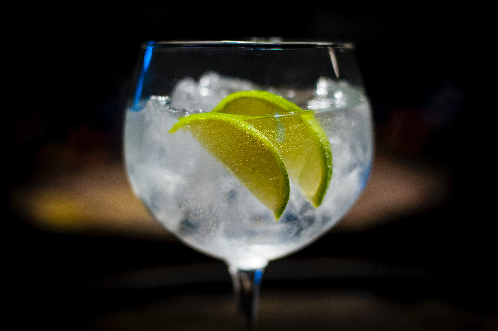

Gin and tonic

List of ingredients
You will need:
- Drink meter
- Mixer spoon
- Gin of good quality
- Tonic water
- 1 fresh lime
- 1 cinnamon stick
- Ice
Preparation:
- Start by putting ice in the gin cup until the top
- Use the mixer spoon in circles to freeze the cup
- With the drink meter measure 50ml of gin
- Take a slice of lime and pass on the edge of the glass, then put it inside the glass
- Complete the mix with 250ml of tonic water and give a little mix
Return to homepage